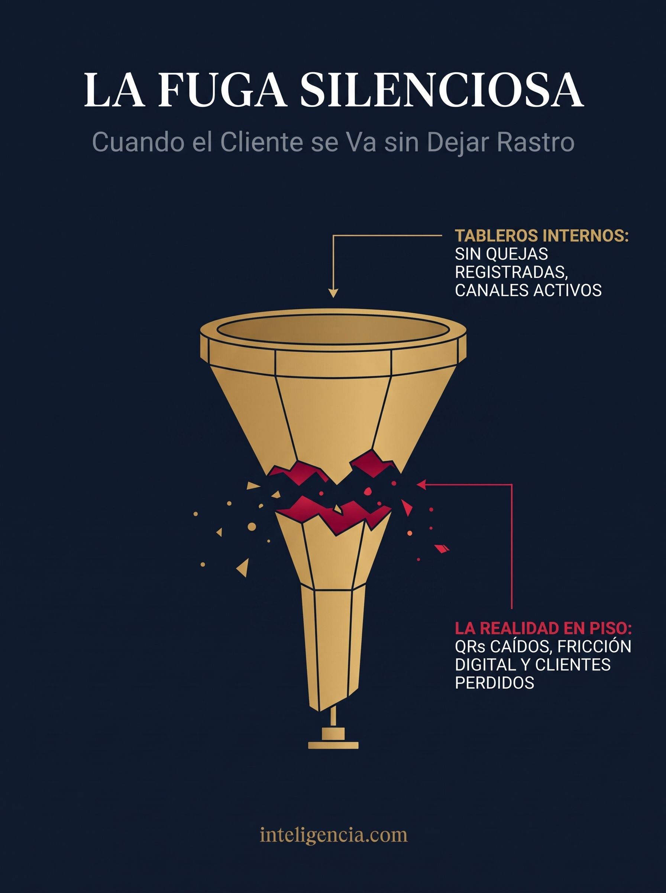

Un problema operativo repetitivo jamás debe diagnosticarse como un hecho aislado ni como un simple descuido del personal de piso. Cuando se repiten las filas interminables en horarios pico, los tiempos muertos en entregas o los retrabajos constantes, el fallo no está en la gente: está en el diseño del proceso.

Fuga silenciosa: Dark Data & Silent Churn
En muchas sucursales en México y Colombia, los códigos QR de satisfacción están caídos, los quioscos de atención no funcionan y las encuestas digitales nadie las revisa.
El resultado es peligroso: el cliente molesto no reclama, simplemente cierra la puerta y se va en silencio, llevándose todo su valor de vida (LTV) sin dejar rastro en sus métricas.
Auditar el proceso desde los zapatos del cliente
Ante estos tropiezos, la reacción burocrática más común suele empeorar el problema: agregar más capas de supervisión, más formatos de control y más pasos de aprobación. Eso no corrige la raíz; añade fricción a una operación que ya está saturada y aleja todavía más al cliente.
Para destrabar una operación hay que recorrer el camino real del cliente (Customer Journey) sin aviso y en momentos de máxima demanda. En inteligencia.com entramos al terreno para mapear esas fricciones tempranas, documentarlas con precisión y ayudar a su empresa a modificar lo modificable —o rediseñar el proceso desde cero— para recuperar fluidez y margen.
De la corrección de procesos al control financiero
Estabilizar una operación caótica no se logra pidiéndole a los equipos que trabajen más horas, sino eliminando la grasa del proceso. Y cuando los hallazgos muestran que la línea operativa está colapsada y requiere intervención directa en sitio para rescatar la rentabilidad, operamos junto con nuestra práctica de dirección temporal en liderazgointerino.com para ejecutar el ajuste de tajo y devolver el control a la dirección general.
¿Los cuellos de botella en su operación están frenando sus ventas o encareciendo su servicio?
Conversemos de manera directa y confidencial. Revisamos en campo sus procesos y canales de atención en México o Colombia para identificar exactamente dónde se está fugando su margen.